OpenAI 最近发布的 o1 系列模型堪称迈向强人工智能的一次飞跃，其强大的推理能力为我们描绘出了下一代人工智能模型的未来图景。近日，伦敦大学学院（UCL）人工智能中心汪军教授撰写了一份「LLM 推理教程」，深入详细地介绍了 OpenAI ο1 模型背后的相关方法。
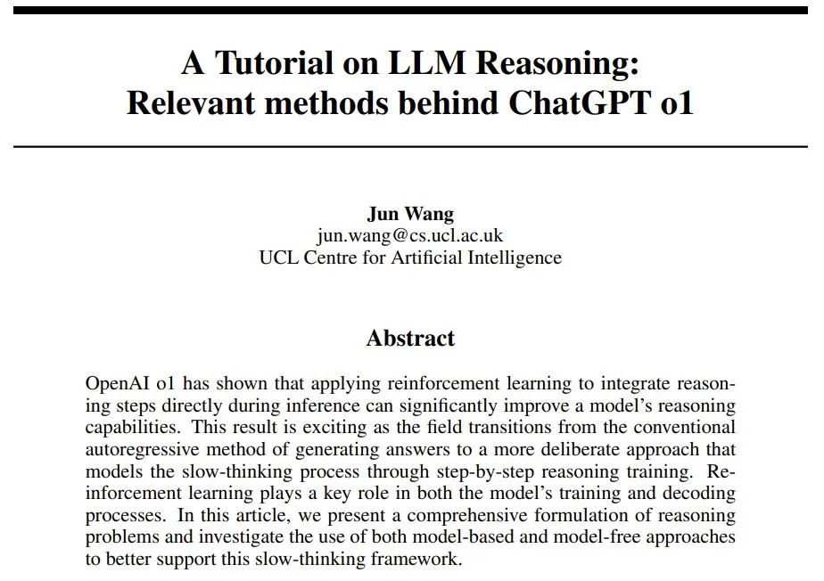
链接：https://github.com/openreasoner/openr/blob/main/reports/Tutorial-LLM-Reasoning-Wang.pdf
o1 的训练使用了强化学习技术，通过显式地嵌入一个原生「思维链」（NCoT）过程，可出色地完成复杂的推理任务。也就是说，o1 在生成响应之前可通过一步步地推理实现「深度思考」。
从 OpenAI 发布的数据看，相比于之前的 ChatGPT 4o，o1 在数学和编程任务上的表现要强 5 倍。它在竞争性编程中排名第 89 位，在美国著名的数学奥林匹克资格赛中名列前 500 名，并在物理、生物和化学基准测试中超越了人类博士级的准确度。
o1 的一个关键创新是它允许在推理过程中花费更多时间进行推理，这标志着一种范式转变：从快速、直接的反应转向缓慢、深思熟虑、多步骤的推理时间计算。见图 1。
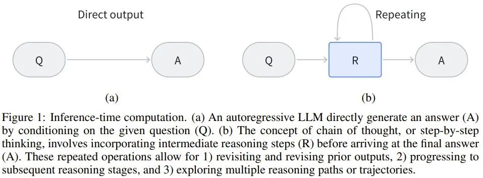
图 1：推理时间计算。(a) 自回归 LLM 是直接基于给定问题生成答案。(b) 思维链和逐步思考的概念则涉及到在得到最终答案之前，整合中间推理步骤。这些重复步骤操作允许 1) 不断重复访问之前的输出，2) 逐步推进到后续推理阶段，3) 探索多个推理路径或轨迹。
有趣的是，在指导人类决策和行为方面，人类认知中存在两种相关但不同的认知处理模式，其中每种都有各自不同的大脑回路和神经通路，见图 2。
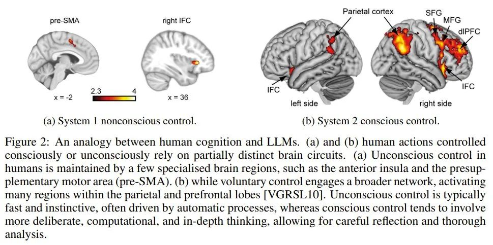
图 2：人类认知和 LLM 的类比。(a) 和 (b) 人类有意识或无意识控制的行为依赖于部分不同的大脑回路。(a) 人类的无意识控制由一些专门的大脑区域维持，例如前脑岛和前补充运动区（pre-SMA）。(b) 而自主控制则涉及更大的网络，激活顶叶和前额叶内的许多区域。无意识控制通常快速而本能，通常由自动过程驱动，而有意识控制往往涉及更审慎、计算和深入的思考，需要仔细的反思和透彻的分析。
系统 1 思维快速、自动且直观，毫不费力且通常是无意识的。它依赖于能够快速处理的神经通路，尤其是在需要快速反应或认知资源受限的情况下。
系统 2 思维是深思熟虑的、费力的和有意识的，涉及集中注意力和分析式推理。它处理信息的速度更慢，常用于复杂的问题求解、逻辑推理和决策任务。
o1 的诞生非常激动人心，因为 大语言模型（LLM） 现在不仅能使用学习到的模式进行快速响应，而且还能通过思维链或其它形式的搜索等机制模拟复杂的推理过程。这就类似于人类的更深度的、步步执行的思考方式。
也正因如此，OpenAI ο1 在科学、编程和数学领域都取得了相当卓越的表现。此外，o1 在 AI 安全和对齐方面也取得了进展。该模型的思维链推理为整合人类价值观和原则提供了新的机会，从而可提高安全评估和越狱测试的性能。
事实上，在 LLM 领域，思维链推理和分步骤思考方法并非新技术。之前已有研究表明，如果在输入中添加「describe your reasoning in steps」或「explain your answer step by step」这样的指令或提供少样本示例，就可以让 LLM 生成中间推理步骤，进而提升其解决问题的能力，尤其是对于数学和编程任务。
但是，这些方法都基于已有的 LLM，并没有将思维链嵌入到模型本身之中。因此，LLM 无法内化这种学习能力，导致许多研究者在探索如何将其直接整合进模型训练中。之前人们提出的方法包括收集专门的训练数据、构建奖励模型和增加解码的计算复杂度，但目前还没有一种方法能大规模地在性能上取得重大突破。
汪军教授表示，我们目前尚不清楚 OpenAI 的 o1 创新是否植根于模型本身，还是依然依赖于外部提示系统。如果它确实涉及在架构中明确嵌入分步推理，那么这将是一个重大突破。
在大幅提高性能的基础上，OpenAI o1 还表明，传统上在训练期间应用的扩展原则现在也与推理阶段相关了。
这样一来，就需要考虑给推理阶段多分配一些算力了。如果能让 LLM 通过增加测试时间计算来提升输出，那便是朝着自我改进式智能体（self-improving agent）迈出的重要一步。
这个研究方向被汪军教授暂且称为 LLM 原生思维链（LLM-Native Chain-of-Thought/NativeCoT），其应当能够固有地反映人类系统 2 思维所具有的深思熟虑的分析过程。
不过，考虑到 o1 是一个闭源系统，因此它究竟是如何实现如此强大的推理能力的还依然是一个谜。
在本文中，汪军教授全面回顾了可能的相关文献，并探讨了这一突破背后可能的核心技术和方法。此外，他还提出了基于近期研究成果实现相应开源版本的方法，以加速该领域的研究。
下面首先将介绍典型自回归 LLM 常遇到的两个挑战，以强调对世界模型和思维链机制的需求。然后将给出一个 MDP 公式，用于将原生 CoT 整合进 LLM（进而得到类似 o1 的推理模型）；同时还会探索其实现细节。最后会以文献评论作结，并给出未来的研究方向。
这里就略过自回归 LLM 的基础介绍，重点来看汪军教授提到的两个挑战。
第一个挑战是预测下一 token 的目标。虽然有些人认为预测下一 token 可能会造就通用智能（AGI），但汪军教授表示，仅仅专注于预测下一个词会限制智能的潜力。为了得到更深层次的智能，可能需要不同的优化目标和学习范式。
传统自回归 LLM 面临着一个关键挑战：如何使系统超越其训练数据的界限并开发出新颖的、可能更优的策略？因为智能体的表现常常受限于其学习的演示的质量，无法超越其训练数据所体现出的技能水平。
但是，如果使用数据来开发更深度的理解或世界模型，就有可能实现复杂策略的演进，进而超越训练数据的限制。
世界模型（world model）代表了智能体对环境的理解。学习和优化这个世界模型，再加上模拟潜在结果的能力，有望极大提升 AI 智能体的能力。这些内部世界模型所提供的模拟能力将能实现深度思考（模拟），从而增强智能体的推理和泛化能力。基于模型的策略（如蒙特卡洛树搜索 （MCTS））是这种方法的经典例证。向系统 2 型推理的过渡（o1 可能就是一个例证）依赖于建立某种类型的世界模型并利用强化学习（奖励最大化），而不仅仅是最小化预测误差。这种方法的转变可能是 OpenAI o1 强大推理能力背后的关键过渡技术之一。
通过将 LLM 的预测能力与强化学习和世界建模的策略深度相结合，像 o1 这样的 AI 系统可以解决更复杂的问题和实现更复杂的决策过程。这种混合方法既可以实现快速模式识别（类似于系统 1 思维），也可以实现深思熟虑的逐步推理（系统 2 思维的特征）。这也许能解释 o1 表现出的强大性能。
第二个挑战则来自计算复杂性角度：LLM 运行时受到二次计算复杂性的约束。当 LLM 遇到多步数学难题时，这种约束会变得尤为明显。
但是，思维链却有望减轻这一限制。其可通过一系列「思维」步骤来扩展响应，由此支持一定数量的额外计算资源；它本质上是一个有限的内存，支持写入但缺乏删除或覆盖的能力。尽管该方法颇具潜力，但它仍然不是一个完全动态的内存系统，并且没有原生地融入解码阶段。这种必要性使得研究社区亟需超越当前 Transformer 解码器网络能力的高级计算架构。事实上，存在这样的需求：在推理和解码阶段实现类似于蒙特卡洛树搜索 （MCTS）的基于模型的复杂策略。
这种先进的推理时间计算系统将使 AI 模型能够维护和动态更新问题空间的表征，从而促进更复杂的推理过程。这种方法与认知科学中的工作记忆（working memory）概念一致；这对于复杂的问题解决和深度思考至关重要。通过整合这些功能，AI 系统可以模拟多个步骤，评估不同的场景，并做出更明智的决策 —— 类似于人类专家推理的深思熟虑过程。
为了建模问答或问题解答等任务中的推理过程，这里要将推理的结构调整成 Q → {R} → A 序列的形式。
-
-
R：表示为了得到解答，模型生成的中间推理步骤的序列；
-
这种结构允许 LLM 生成一系列推理步骤，从逻辑上将问题 Q 与最终答案 A 联系起来。
汪军教授表示，可以将该推理过程定义为一个马尔可夫决策过程（MDP）。MDP 能为建模推理提供一个灵活的框架。它允许模型自回归地生成迈向最终答案的顺序推理步骤，同时还通过在每个步骤采样多条路径来实现树结构以获得备选推理轨迹。通过结合顺序推理和分支推理这两种方法，该模型可以探索各种解决方案，从而创建一个多功能且全面的推理过程。
现在可以使用状态、动作、策略和奖励来描述这个推理过程了。其中 LLM 的任务是逐步生成与推理步骤和最终答案相对应的连贯 token 序列。
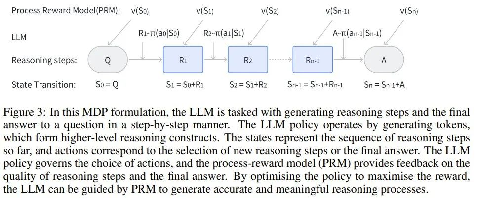
图 3：在该形式的马尔可夫决策过程中，LLM 的任务是逐步生成推理步骤和问题的最终答案。其中，LLM 策略的运作方式是生成 token，而，这些 token 可以形成更高级的推理结构。状态表示迄今为止的推理步骤序列，动作对应于选取新推理步骤或最终答案。LLM 策略控制动作的选择，过程奖励模型（PRM）的作用是提供有关推理步骤和最终答案质量的反馈。通过优化策略以最大化奖励，LLM 可以在 PRM 的引导下生成准确且有意义的推理过程。
其中状态表示迄今为止的推理步骤顺序，而动作对应于选择新推理步骤或最终答案。LLM 策略控制着动作的选择，而过程奖励模型 （PRM）则提供有关推理步骤和最终答案质量的反馈。通过优化策略以最大化奖励，LLM 可以在 PRM 的引导下生成准确且有意义的推理过程。
详细的论证过程这里就不多谈了。总之，可以基于此得到 LLM 的世界模型的定义：
定义 1：LLM 的世界模型可以定义为 (𝒯, 𝒱)，其中：
-
𝒯 (s_t, a_t) 是转换模型，它是确定性的，因为当前状态 s_t 和动作 a_t 仅能定义唯一下一状态 s_(t+1) ，因此 s_(t+1) = s_t + a_t。
-
𝒱 (s_t, a_t) 是过程奖励模型（PRM），用于评估在状态 s_t 下动作 a_t 的质量。它能反映生成的推理步骤或 token 在得到最终答案过程中的合适程度和有效性：𝒱 (s_t, a_t)=𝑣_t。
由于转换是确定性的并且直接遵循策略，因此过程奖励模型 𝒱 (s_t, a_t) 封装了 LLM 与其环境之间的整个交互，可评估每个推理步骤或 token 对所得出的最终答案的贡献程度。
接下来将介绍如何收集中间推理数据，并使用它来训练过程奖励模型（PRM），再利用 PRM 来训练 LLM 策略，并在解码阶段引导推理过程。
为了模拟出高级推理能力，就需要推理轨迹数据。最直接的方法当然是人工标注推理步骤，但这种方法缺点也很明显。
一种无需人类监督，特别有效的收集数据和提升 LLM 推理的方法是 Self-Taught Reasoner（STaR）。
使用 STaR 方法时，模型会自主生成中间推理步骤并使用它们来验证其内部推理能力。更方法的基础是 LLM 有能力通过生成中间步骤 {R_1, R_2, . . . , R_n} 从问题 Q 推理到最终答案 A，并使用自己的策略验证正确性。
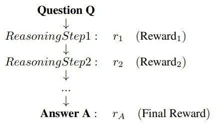
也就是说，该方法首先会采用 LLM 的策略 π_LLM，基于初始问题 Q 和最终答案 A 来生成推理步骤 {R}。
生成 {R} 之后，就要验证其正确性。这里可以再次使用这个 LLM 策略。
之后，收集到的 {Q, {R}, A} 就可进一步用于训练策略 π_LLM，提升有效推理步骤的生成过程。
当推理序列较长时，还会用到蒙特卡洛树搜索（MCTS）。
如图 4 所示，PRM v (s) 和 LLM 策略 π_LLM 可以相互增强以实现自我提升。
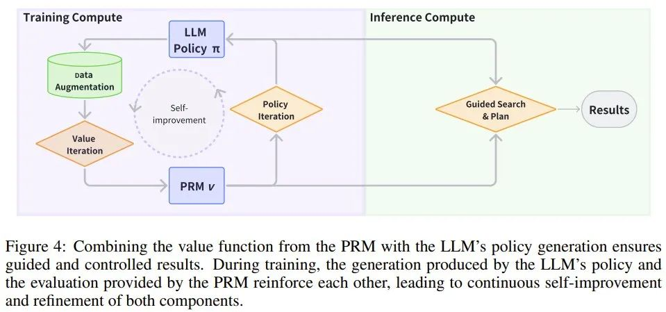
图 4：将 PRM 的价值函数与 LLM 的策略生成相结合，可确保得到的结果是经过引导且可控的。在训练过程中，LLM 策略得到的生成结果和 PRM 提供的评估相互增强，从而可让这两个组件不断自我改进和优化。
有了推理数据之后，下一步就是训练世界模型了，也被称为过程奖励模型（PRM）。也就是说，由于状态转变是确定和已知的，因此重点就变成了学习一个之后可用于引导搜索、推理和解码过程的通用奖励模型。
该奖励模型通常被称为验证器，记为 vPRM (s)，可以使用有标注的推理步骤数据集进行训练。其训练通常涉及根据推理步骤的正确性优化一个分类损失函数：
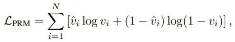
还有另一种方法，是将 PRM 视为一个可以通过价值迭代方法训练的价值函数，使其能够预测累积奖励并通过最佳动作选择指导推理过程。
假设有一个推理过程，其中状态 s 表示当前状态，并且其整合了之前的所有状态。该价值迭代方法的目标是学习一个由 θ 参数化的价值函数 V_θ (s)，其可预测从状态 s 开始的预期累积奖励。该价值函数可通过评估不同动作的潜在结果来指导推理过程。r_φ (s) 是奖励函数，其会根据中间推理步骤或最终答案的正确性为状态 s 分配一个标量奖励。γ 是折扣因子，决定了未来奖励的相对重要性。该 PRM 的贝尔曼方程为：
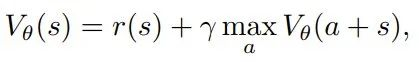
为了学习该价值函数的 θ，这里将 TD 损失函数定义成当前值与贝尔曼目标之间的平方误差：
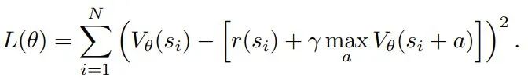
得到了 PRM 之后，就可以训练 LLM 策略以提升其推理能力了。这需要超越传统监督学习框架的方法。通过整合在线强化学习来优化推理任务，PRM 在此过程中发挥着重要作用。
这里来看看 Group Relative Policy Optimisation（GRPO），即分组相对策略优化。
假设对于每个问题 Q = q，策略都会生成推理步骤 {o_1, o_2, . . . , o_G}，每个输出 o_i 由多个步骤 {a_{i,1}, a_{i,2}, . . . , a_{i,Ki} } 组成，其中 K_i 是输出 o_i 中的推理步骤（或 token）总数。现在，可以构建通过 PRM 学习 LLM 策略的 GRPO 了，如下所示。
对于每个问题 q，GRPO 从旧策略 π_θ_old 采样一组输出 {o_1, o_2, . . . , o_G}，目标是通过最大化以下目标来优化策略：
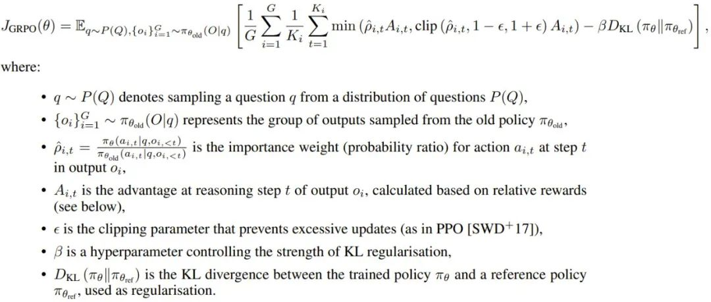
GRPO 不会将 KL 惩罚直接纳入奖励，其规范策略的方式是将当前策略 π_θ 和参考策略 π_θ_ref 之间的 KL 散度直接添加到损失函数中。这可确保更新后的策略在训练期间不会过度偏离参考策略，从而有助于保持稳定性。
这种 GRPO 形式是通过利用推理步骤和最终步骤中的分组相对奖励来优化 LLM 策略，专门适用于通过过程奖励模型的推理任务。归一化的优势函数（advantage function）是根据相对性能计算的，鼓励策略偏向在一组采样输出中表现更好的输出。此外，KL 正则化可确保更新后的策略与参考策略保持接近，从而提高训练稳定性和效率。该框架提供了一种稳健的方法，可通过基于 PRM 的优化来指导 LLM 推理。
另外，还有 token 级 DPO 等不使用 PRM 的更高效的离线方法，详见相关论文《Token-level direct preference optimization》。
训练完成后，LLM 策略必须在推理过程中高效地生成输出。LLM 常用的方法是自回归，即根据之前的 token 逐一生成新 token。但是，对于推理任务，还必需更复杂的解码技术。
为了在效率和效果之间取得平衡，有研究发现，波束搜索等更灵活的方法有利于推理任务。对于更复杂的推理任务，可以使用 MCTS 等向前看的模型。
MCTS 可模拟多条推理路径，并根据奖励系统对其进行评估，选择预期奖励最高的路径。这允许模型在推理过程中探索更大范围的可能性，从而增加其获得最优解的机会。使用 MDP，可以从形式上定义其推理过程结构。
定义 2：原生思维链（NCoT）是指大型语言模型（LLM）固有的推理能力，这让其无需外部提示词便可以自动执行逐步式的结构化推理。该能力可以表述为一个马尔可夫决策过程（MDP）(S, A, π, R)，其中
-
S 是状态空间，表示生成到给定位置处的 token 序列或推理步骤；
-
A 是动作空间，由潜在推理步骤 R_t 或最终答案 A 组成；
-
π_LLM (a_t | s_t) 是控制动作选择的策略（也是 LLM），其可根据当前状态 s_t 确定下一个推理步骤或最终答案；
-
R (s_t a_t) 是过程奖励模型（PRM，其作用是根据所选动作 a_t 的质量和相关性分配奖励 r_t，以引导推理过程。
该模型既可以通过展开 MDP 来遵循顺序推理路径，也可以通过在每个状态下采样不同的推理步骤来探索多个轨迹，形成树状结构（图 5）。过程奖励模型 R 提供了对该空间的引导搜索，其控制推理轨迹的方式是支持能得到更有意义或更正确的推理步骤的动作。
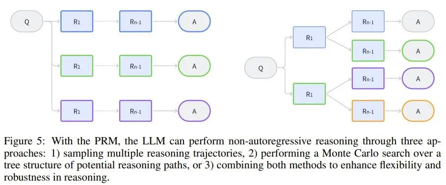
图 5：借助 PRM，LLM 可以通过三种方法执行非自回归推理：1) 采样多条推理轨迹，2) 对潜在推理路径的树结构进行蒙特卡洛搜索，3) 结合前两种方法来增强推理的灵活性和稳健性。
下面将回顾并讨论相关领域的几篇关键论文，介绍它们的贡献和局限性。图 6 描述了这些研究与更广泛的研究图景之间的联系。
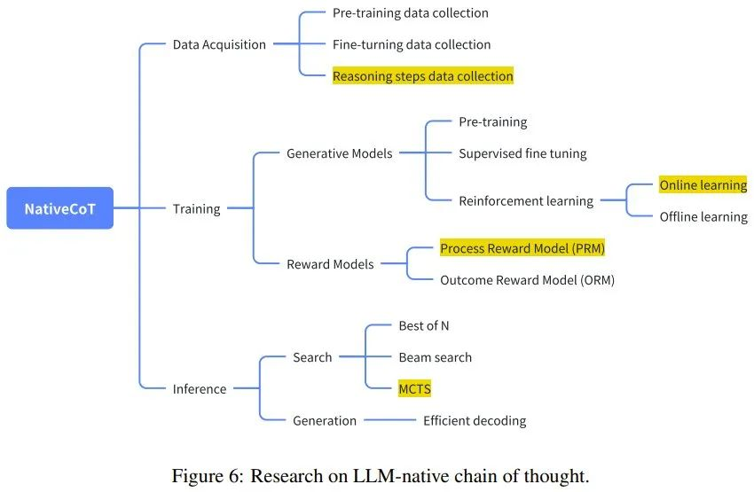
有几篇论文重点关注优化 LLM 在推理时间的推理，比如：
-
论文《Alphazero-like tree-search can guide large language model decoding and training》提出了一种将蒙特卡洛树搜索（MCTS）与 LLM 解码整合起来的方法，研究证明这种组合能够有效地引导推理，尤其是复杂的多步骤任务。
-
论文《Scaling llm test-time compute optimally can be more effective than scaling model parameters》强调了优化测试时间计算的重要性，其通过实证研究表明，推理时间推理增强通常可以比简单地扩展模型参数产生更实质性的改进。这反映了人们日益增长的理解，即可以利用推理过程中的更多计算来实现更高质量的推理，而不必增加模型的大小。
-
论文《Think before you speak: Training language models with pause tokens》提出了另一种方法：在推理阶段使用暂停 token 强迫模型暂停并「思考」。该方法会引入一个隐式的推理模型，从而鼓励 LLM 对信息进行分块，模仿人类的思考。
验证器模型（结果奖励模型和过程奖励模型）已成为提高 LLM 推理可靠性的重要研究领域。
-
论文《Training verifiers to solve math word problems》最早尝试在数学推理任务中使用验证器（仅结果奖励），为后续研究奠定了基础。
-
论文《Solving math word problems with process-and outcome-based feedback》扩展了验证器的概念，整合了基于过程的推理机制。
-
-
论文《Making large language models better reasoners with step-aware verifier》将验证器模型与大多数投票机制组合到了一起，以在推理任务中得到更可靠的输出。为了增强验证过程的稳健性，该方法会交叉检查多条推理路径并过滤掉不正确的步骤。
-
论文《Star: Bootstrapping reasoning with reasoning》探索了自动获取与推理步骤相关的数据的方法。STaR 提出了一种自学习范式，让模型可通过生成和批评自己的步骤来提高其推理能力，从而产生更可靠的中间步骤。
-
论文《Math-shepherd: Verify and reinforce llms step-by-step without human annotations》进一步推进了该方法，表明无需成本高昂的标注也能逐步训练 LLM，其为推理数据问题提供更具可扩展性的解决方案。
-
论文《Multi-step problem solving through a verifier: An empirical analysis on model-induced process supervision》强调了实际数据采集对于推理任务的重要性，特别是对于编程问题。
-
论文《Alphazero-like tree-search can guide large language model decoding and training》使用了 MCTS 来获取数据。
-
论文《Improve mathematical reasoning in language models by automated process supervision》则在此基础上使用了线性搜索来提升效率。
-
也有不少研究者致力于理解 LLM 逐步推理背后的机制，如论文《Why can large language models generate correct chain-of-thoughts?》和《Why think step by step? reasoning emerges from the locality of experience》。
-
论文《Llama: Open and efficient foundation language models》则是从图模型角度来分析思维链机制。
-
论文《Why think step by step? reasoning emerges from the locality of experience》探索了推理作为 LLM 的一种自然能力的内在原因。其认为推理是语言模型处理本地化经验和知识的一个副产物。
-
论文《Critique ability of large language models》对 LLM 批评自己的能力进行实证评估，结果表明自我批评往往很有限，并且通常只有当模型足够大时才会涌现这种能力。
-
论文《Pangu-agent: A fine-tunable generalist agent with structured reasoning》从系统角度提出了超越传统模型的结构化推理机制，类似于 OpenAI ο1 模型。这项研究反映了向更通用的推理智能体的转变，这些智能体能以更高的精度和灵活性处理更广泛的任务，描绘了下一代推理模型的愿景。
阅读原文

评论列表 (0条)：
加载更多评论 Loading...